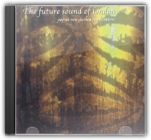
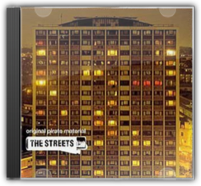
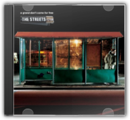

In Come Away with Me, it is not just the timbre of Norah Jones's voice that is mature beyond her years. Her assured phrasing and precise time are more often found in older singers as well. She is instantly recognisable, blending intimations of Billie Holiday and Nina Simone without sounding like anyone but herself. Any way you slice it, she is a singer to be reckoned with. Her readings of the Hank Williams classic, "Cold Cold Heart" and Hoagy Carmichael's "The Nearness of You" are worth the price of the CD. Jones's own material, while not bad, pales a bit next to masterpieces such as these. They might have fared better had she and producer Arif Mardin opted for some livelier arrangements, taking better advantage of brilliant sidemen such as Bill Frisell, Kevin Breit and Brian Blade; or if the tunes had simply been given less laconic performances. Jones has all the tools; what will come with experience, and some careful listening to artists like JJ Cale and Shirley Horn, is the knack of remaining low-key without being sleepy—sometimes less is not, in fact, more. —Michael Ross 
A hint: there are noWham songs on George Michael's 10-tune tribute to the music of the 20th century. There isa song by the Police ("Roxanne"), but the reggae ballad is rendered in such a turgid manner, it resembles nothing so much as a lounge singer stoned on Quaaludes. Elsewhere, the silver-tongued former club kid covers Rodgers & Hart ("Where or When"), U2 ("Miss Sarajevo"), and Ewan MacColl ("The First Time Ever I Saw Your Face"). He pours so much calculated sentiment on top of each track that the entire record oozes a prefab corniness even Hallmark would recoil at. This is not to deny the power of George Michael's velvety, potent voice (although it does sound much better singing catchy dance-pop ditties) nor the fact that he's selected an interesting selection of ballads and folk and torch tunes. And Phil Ramone's production never veers from the middle of the road, unobtrusively shifting from smooth big-band jazz to Disney movie-ish harp accompaniment. If this CD is Michael's attempt to join the company of great song interpreters of the past, from Frank Sinatra to Billie Holiday, he will have to take a lot more chances and lose the sappy reserve. —Mike McGonigal 
Garry Cobain and Brian Dougans (FSOL) were the brains behind the evergreen classic "Papua New Guinea", which was first featured on Accelerator, their debut LP. In fact, Dougans had already written the hit "Stakker Humanoid" (under the name of Humanoid) but it was as Future Sound of London that he really gained crossover credibility. Acceleratoris an apt title for this continuous mix of rhythmically propelled tracks. A real "journey" album, it takes in not only the lush, escapist tropical vibe of "Papua New Guinea", but also the melancholic "While Others Cry", the sharp strings and slender hooks of "Pulse State", and a heap of feistier tracks such as "It's Not My Problem", "Moscow", "Calcium" and "Expander". A well rounded, well produced and well memorable album, Acceleratordeserves its classic status and will appeal to those who like music for cerebration as well as celebration. —Paul Sullivan 
In the live arena heavy metal can be implausibly powerful; it can rattle teeth from gums, set ears ringing like the clappers of doom and, when concocted by the gentlemen of Iron Maiden, virtually fracture your skull. Live After Death, meanwhile (a packed double disc set recorded during the band's extensive World Slavery jaunt of 1984 and 1985), is the awesome, irrefutable proof. Of course, expertly hewn slabs of solid rock carefully concocted in recording studios are all very well. But "The Number Of The Beast" and "Run To The Hills" were simply made to be blasted through 152,000 watts of PA system by five young men with undiluted testosterone pulsing through their bulging, whiplash veins. Bruce Dickinson's astounding lung capacity is frankly terrifying at times—he's certainly not a man you'd ever want to meet in a blow football tournament—while the band are virtually aflame. —Ian Fortnam

Papua New Guinea: Translations
Future Sound Of London
That FSOL's Papua New Guineais a classic record is an undisputed fact. Celestial choir voices, colourful bird song, nebulous synth swirls and wistful flute all conspire to conjure up images of a tropical paradise, and its iridescent beauty has touched many a soul over the years. Whether it justifies an entire album's worth of remixes though (all done by FSOL) is a different matter. The opening track is the original version—so far so good. The "Papsico" mix takes the tune up to even higher plateaus of happy escapism, while translation number three, "The Lovers", ushers in a slick jazz-funk groove and added bongos. However, at the end, a particularly lengthy electric guitar solo sneaks in. This is the turning point. 
Crawling out of the end of the rave scene, the Prodigy's second album went straight in at number one in the charts. All the tracks have the unique stamp of Liam Howlett and the boys, from the hypnotic atmosphere of aggression and attitude on "Poison" and "Voodoo People" to the guitar-driven "Their Law" (featuring the now defunct Pop Will Eat Itself) and the breakbeat tech-house of "No Good (Start the Dance)". One of the few dance acts to retain underground credibility and huge mainstream popularity, Music For The Jilted Generationshows The Prodigy at their best. Any modern music collection seems barren without its presence. —Ed Potton |

Original Pirate Material
Streets
In a thrilling UK Garage scene, blighted only by a reliance on drippy soul cliché and tiresome braggadocio, The Streets' eminently quotable Mike Skinner may just be the voice to take it to the next level with Original Pirate Material. This debut is a staggeringly eloquent and fearlessly honest snapshot of gritty street-level existence, as experienced by an ordinary bloke. At first listen, the Birmingham-born Skinner's cheeky cockney affectations grate slightly. But for every line that makes you squirm, there's 20 that drop your jaw. "Has It Come To This?" is "A day in the life of a geezer", a seductive encapsulation of London lifestyle, presented raw as a bootleg, but bulging with sharp wit and feverish detail. "Stay Positive" weaves a fearful tale of heroin addiction, Skinner sneering "I ain't no preaching fucker/ An' I ain't no do-goodie-goodie either/ This is when shit goes pear-shaped". And "The Irony of It All" presents a beguiling case for legalisation, presenting a fictional exchange between a beered-up, self-righteous lager lout and a fey student weed enthusiast. Original Pirate Materialis a milestone, the real voice of British youth set down on record. Don't miss this.—Louis Pattison

A Grand Don't Come for Free
Streets
How do you follow an acclaimed debut in your own inimitable style without repeating past glory? The answer is simple—make a concept album. Mike Skinner's (aka the Streets) A Grand Don't Come for Freetells the story of his recent troubles and triumphs in a manner that is as much music-hall as it is friends chatting on the phone. The story is simple but the narrative is far more cohesive than a string of songs explaining the plot. His broken television, a pivotal part of the story is referenced throughout, as are warning signs that his girlfriend, Simone, is seeing best mate Dan behind his back. It may sound like a soap opera but is given added depth by the attention to detail in lyrics ("she was with the white-shirted man in McDonalds car park" on "Such a Twat"); the structure of the music as if it were following the dialogue (hi-hats, whooshes and piano stabs as the effects of Ecstasy take hold on "Blinded by the Light); and an openness to wear his heart on his sleeve (the beautiful ode to stoned love "I Wouldn't Have it Any Other Way" and the heart-wrenching break-up song, "Dry Your Eyes"). 
Underworld returned from the Beaucoup FishWorld Tour at the end of 1999, utterly exhausted after almost two years of international touring. It was the final straw for deck-wizard Darren Emerson, who picked up his record box, jetted off to Uruguay, and claimed his mantle as a globe-trotting international DJ, turning his back on Underworld forever. Rick Smith, however, reacted to the experience of coming off tour in a very different way. Locking himself in the studio for eight months, he watched and listened to tape after tape of the Underworld live experience, examining it, dissecting it, evaluating it. The result is Everything, Everything, a 75-minute compilation of the band's greatest onstage moments, from a rampant, super-fast "Shudder/ King Of Snake" to a breathtaking closing hybrid of techno milestones on "Rez/ Cowgirl"—not forgetting, of course, a frenetic thunder through the band's ultimate crowd-pleaser, the heavenly proto-trance anthem "Born Slippy". To the Underworld disciple, Everything, Everythingwill surely come as manna from heaven. —Louis Pattison 
Faithless are actually a band of multiple faiths, both musical and spiritual, including Buddhism, hippy idealism and rave fanaticism. All these elements are sublimated into their dance sound, and after their mid-Nineties million-selling single "Insomnia", they were mistakenly dismissed as disposable Euro-house. The diversity of Sunday, 8pmgives the lie to this notion. It's galvanising dance music for sure, with big, overarching crowd-pleasing synth riffs courtesy of keyboardist Sister Bliss and non-performing Brian Wilson-style programmer Rollo. But then Boy George guests on "Why Go", a big ballad with a simple plea, while "Bring My Family Back" and "Take The Long Way Home" feature quietly intense, first-person raps reminiscent of Massive Attack, whose shadowy, ominous sense of melancholy is in evidence throughout the album. So when "God Is A DJ" breaks through the clouds and fills the dancefloor, it's more than just easy triumphalist hedonism; it is a blessed relief, a pleasure earned. —David Stubbs 
"They're so antisocial," said Mixmaster Morris of the reclusive Future Sound of London. "They won't even go to parties anymore—they do all their gigs over the telephone." After the success of their majestic "Papua New Guinea" single and the Acceleratoralbum from which it was taken, FSOL retreated to the studio and never left. Their only communication with the outside world was through their music, an increasingly abstract Dadaist collage of overdubbed beats and noises that defied genres and stymied trend-happy journalists. While some of the material on ISDNwas previously released under the pseudonym Far Out Son of Lung (the worst-kept secret in dance music), the bulk of the album was taped from performances delivered via digital telephone links to radio stations throughout Europe. Naturally, the ubiquitous and intrusive medium of radio encourages challenging and elaborate environmental music. So unlike their previous album, Lifeforms, whose closest earthly relation was techno, ISDNis the distant cousin of jazz, both in its blatant sampling of sax and drums and its freeform, exploratory nature. —Matthew Corwine 
During their long reign as one of dance music's most endearing acts, the Orbital sound has rarely changed. The result: five albums of beautiful electronic space-symphonies, blunt dancefloor beats and eccentric cinematic themes. And so to album six, 2001's The Altogether. From the start, it's clear that this is no ordinary Orbital album. Gone are the space-opuses of old, replaced by rock-sampling instrumentals, what can be described as "techno skiffle" numbers and David Gray collaborations. Of the 11 tracks here, three are punk-sampling breakbeat romps (think 1996 hit Satan), two are full-on vocal numbers and one's a breakneck drum-and-bass tune about rioting (the Scott Walker-inspired Meltdown). Sure, all the familiar elements are here—tracks such as "Pay Per View", "Doctor Who" and "Shadows" are classic Orbital—but they're no longer the most dominant themes. While fans may find The Altogetheruncomfortable listening at first, it's easily the Hartnolls' most varied album to date. Within its 60 minutes lies some of the duo's most inventive and enjoyable music in years. This is a real mixed bag, for sure, but one that demands repeat listens. —Matt Anniss |

Liam Clancy
Collection Total:
2121 Items
2121 Items
Last Updated:
Aug 4, 2013
Aug 4, 2013


 Made with Delicious Library
Made with Delicious Library